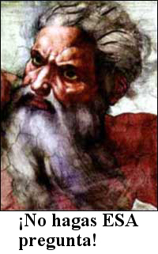
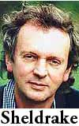
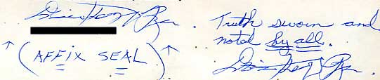

Volvió Gary Schwartz

Jon Herron, de Tucson, Arizona, aparentemente ignora que el Dr. Gary Schwartz de la universidad de Arizona y yo somos viejos conocidos. Escribe:
Le escribo esta noche debido a una noticia espantosa presentada en una emisora noticiosa local aquí en Tucson. Luego de pasar por los títulos nacionales de costumbre introdujeron un adelanto del siguiente bloque planteando la cuestión de si existía prueba científica sobre la vida después de la muerte. Me sentí inmediatamente desconcertado ya que pensé que ese noticiero en particular no era tan sensacionalista como los otros. Resultó que yo estaba equivocado, sin embargo, cuando volvieron con una muestra de periodismo absolutamente asquerosa que presentó la vida después de la muerte ¡como si fuera apoyada por pruebas científicas obtenidas en mi propia Universidad de Arizona!
¡Parece que aquí hay un profesor obviamente titular, el Dr. Schwartz, quien de algún modo obtiene dinero de subvención para traer médiums para hacer lecturas y llega a la conclusión de que esos estudios muestran de modo concluyente vida después de la muerte! Este artículo ocupó un bloque entero con el sonriente Dr. Schwartz vanagloriándose de que cualquiera que alguna vez observó los datos ha llegado a la conclusión de que hay algo en ellos, y con fotos de una lectura que se realizó con una mujer sorprendida por su exactitud. Hay menciones de tasas de éxito del 80% que eran demasiado altas para ser explicadas por el azar. Por supuesto lo que ellos registran como éxito es cualquier tenue conexión a referencias vagas. Predeciblemente, no se menciona ni un solo escéptico, ni nadie que pueda discrepar con las conclusiones y métodos del Dr. Schwartz.
Estoy conmocionado e indignado por el hecho de que esta clase de pseudociencia ocurra en mi Universidad y que se le presente a mi comunidad de esta forma tan irresponsable. Escribí a la estación noticiosa (KGUN 9, afiliada de la ABC) esbozando mis dudas y preguntando por qué el Dr. Schwartz aún no ha reclamado el premio de la JREF, dado que tiene una prueba tan irrefutable.
Jon, a la Universidad le importa un bledo. Incluso rechazaron mi oferta de darles el millón de dólares si sólo lograban que Schwartz enviara sus datos sin procesar a esta Fundación (como prometió personalmente que haría unos meses antes) y si probaban sus afirmaciones. Dijeron que no les interesaba. Vaya uno a entenderlos. He aquí una universidad necesitada de dinero según su propia admisión, pero rechazando un millón. ¿Por qué?
Pregúntenle a Schwartz. Él lo sabe.
Tom Short se retira
Más sobre el predicador que derrotó Jacob Spinney, esta vez de un lector anónimo:
Cuando yo era estudiante en la Universidad de Maryland a mediados de los 80, Tom Short era el líder de la sección de la “Cruzada del Campus por Cristo” en College Park. Una de sus actividades era lo que él llamaba “evangelismo al aire libre”. Hay una gran plaza en el campus, frente a la Biblioteca Hornbake, y por varias horas a mitad del día si el tiempo era bueno, Tom subía a las escaleras, Biblia en mano, y empezaba a predicar a todos y cada uno de los que fueran y escucharan.
La mayor parte de los días, una multitud de entre 50 y 200 personas se acercaba a escuchar, debatir, argumentar, discutir lo que Tom tenía que decir… la mayor parte del tiempo, las bromas y las réplicas agudas de Tom hacia la multitud eran, como mínimo, entretenidas. Cuando se lo desafiaba muy directa o duramente, Tom normalmente devolvía la pregunta o cambiaba de dirección y de tema. Mejor intentar otro enfoque, superficialmente, que profundizar demasiado en un solo tema, sin dudas, especialmente dado que el “objetivo” sólo era provocar el interés de los estudiantes lo suficiente para hacer que asistieran más tarde a los encuentros…
Como sea, en un arranque de curiosidad, una vez decidí asistir a una reunión de la Cruzada del Campus, para ver si Tom realmente profundizaría más alguno de los temas que fueron pasados por encima durante el día en Hornbake Square. Lamentablemente, me desilusionó. Mi experiencia fue como la de Jacob Spinney: hice preguntas difíciles (varias de las mismas preguntas registradas en el excelente artículo de refutación de Jacob) y se me pidió seguir el programa o no volver.
No me sorprende. No pueden convencer realmente a nadie, con gente que realmente piensa y razona. Esos procesos son anatema para su éxito. Como hemos mostrado en reiteradas ocasiones con los paranormalistas, ellos también se retiran a terreno seguro cuando se los desafía.
El asesinato está bien
El lector Frank Ward señala:
En relación con las muertes de 251 musulmanes en el reciente ritual Hajj en Arabia saudita, mi periódico local (The Blade in Toledo) citó al ministro de Hajj saudí diciendo: “Se tomaron todas las precauciones para evitar un incidente así, pero éste es el deseo de Dios (el énfasis es mío). A lo cual digo: ¿Entonces para qué molestarse con las precauciones?
¡Buena pregunta, Frank! Creo que la pregunta tiene que ver con el hecho de que las deidades son —como evidencian sus acciones pasadas— caprichosas, celosas, inseguras y maliciosas. Juegan con sus súbditos temerosos sin piedad, solicitando sometimiendo, adoración y rendición totales, antes de otorgar cualquier favor, e incluso entonces retira esas ayudas sólo para verlos saltar. Exigen que tratemos de actuar sensatamente, pero no prestan atención a ello si deciden que ellos saben mejor lo que hacen que nosotros…
Ross W. Sargent nos recuerdan que se supone que los que mueren en el Hajj van directo al Paraíso, así que eso lo convierte en algo correcto según sus reglas. Ahora aprendemos que el Príncipe Nayef Bin Abdul-Aziz, quien también es el Ministro del Interior saudí, ha dicho que los peregrinos pisoteados hasta morir durante el Hajj simplemente “hallaron su destino”. Caray, supongo que entonces el asesinato está bien; la víctima de asesinato simplemente “halló su destino”. El príncipe también dice que los que murieron “hallaron su destino porque su lugar y hora de morir había sido decidido en el momento en que nacieron”. De nuevo, más razones para no presentar cargos o incluso no intentar impedir el asesinato, ¿verdad? ¿Deberíamos apartarnos de Alá, quien ya sabe que el asesinato tendrá lugar y permite que ocurra?
El príncipe Nayef dice que la temporada de peregrinación de 2004 ha sido “un gran éxito”, y que “Aquéllos que dicen otra cosa son ingratos, u odian este país”. Ya veo. Estamos en desacuerdo con usted, ¿así que lo odiamos, Príncipe?
Pero este miembro de la realeza muestra su profunda sabiduría cerrando con: “Realmente, esperamos que las autoridades del Hajj en los estados muslumanes instruyan a los peregrinos para actual serenamente para impedir cualquier daño para ellos y otros”.
Me quedé helado ante tal disparate.
Ross agrega:
De este tipo son los pensamientos que me afloran cuando la gente me pide que respete sus creencias religiosas. Tolerar, sí, pero la religión no merece más respeto que cualquier otra superstición.
Testigos marchitos
Rod Langlands, de Australia, tuvo una pequeña victoria:
Este fin de semana, mientras trabajaba en el jardín, me encontré unos Testigos de Jehová en la puerta del frente. En lugar de echarlos los acorralé y les hice muchas preguntas difíciles. No hace falta decir que las agachadas y las fabricaciones y la evitación de la realidad quitaban el aliento. Aunque no cambien de idea, estoy seguro de que el hecho de que alguien se opusiera a sus creencias debe producir al menos un poco de pensamiento. ¡Como mínimo puede que aparezcamos en una lista de “No visite esta casa”!
No, Rod, tal oposición no produce actividad cerebral alguna, créame. Renunciaron a pensar hace mucho tiempo. Y lamento decírselo, pero ahora está en una lista de “Asegúrense de visitar esta casa”! ¡Eres material de primera clase para ser un objetivo! ¡Aleluya!
Karen se queja
Asmi Latif ha señalado la posibilidad de que nuestra astróloga danesa cascarrabias puede simplemente haber sido malentendida:
Note que Karen Boesen en verdad suena racional si se analizan sus citas de otra manera:
La gente tiene su propio libre albedrío, pero si no usan su sentido común y escuchan al astrólogo, entonces tienen que aceptar las consecuencias.
Puede leerse como:
La gente tiene su propio libre albedrío, pero si (a) no usan su sentido común y (b) escuchan al astrólogo, entonces tienen que aceptar las consecuencias.
Supongo que todo está en la puntuación, Asmi.
A propósito, la señora Boesen ha despotricado sobre supuestos errores cometidos por nuestro corresponsal danés, Mogens Winther. Afirma que él la cita erróneamente, pero hemos visto el original y el texto traducido por profesionales de sus comentarios publicados, y Mogens tiene toda la razón.
Karen, o es usted una astróloga espantosamente inepta, o la astrología simplemente no funciona. Optaré por creer que ambas posibilidades son ciertas. El registro parece probar muy bien ambas cosas.
Las cosas que olvidó Volkamer
El lector Adam Bradley hace una pregunta pertinente sobre el artículo de la semana pasada sobre el científico alemán Volkamer que apoya la idea de que los ojos “irradian una forma desconocida hasta ahora de radiación de materia blanda que es reflejada desde el objeto de la visión, sin la cual no veríamos nada”. Adam pregunta:
¿Las cámaras también emiten esta radiación de materia blanda, sin la cual no veríamos nada? Porque si no lo hacen, ¿no deberían estar en blanco todas las imágenes? Ya que estamos examinando la imagen y no el objeto que fue fotografiado, todo lo que veríamos es papel fotográfico blanco, ¿verdad?
Por supuesto, estoy seguro de que la teoría de este señor será corregida rápidamente para decir que sí, encontramos tales materiales emisores de materia blanda cuando diseñamos la cámara.

El lector Germán Buela de Argentina, sobre el mismo tema:
Pienso que el doctor Volkammer debería explicar, ya que su teoría de la extromisión dice que alguna radiación desconocida se emite desde nuestros ojos y es reflejada de vuelta por los objetos para hacer posible la visión, cómo podemos ver estrellas que se encuentran a miles de años luz de distancia. Quizá dirá que todas esas distancias están mal calculadas o que esta cosa en realidad viaja a velocidad infinita, cualquiera sea la “explicación” que haga sus afirmaciones más extraordinarias y más revolucionarias si fueran ciertas. Con toda probabilidad decidió lo que tendría que “probar” antes de hacer cualquier investigación, a semejanza de lo que hacen los creacionistas.
Sobre el mismo tema, Jim Shaver de Yukon, Oklahoma escribe en relación con la misma afirmación realizada por el doctor Volkammer, expresando prácticamente la misma idea:
Le haría la siguiente pregunta: Si nuestros ojos deben emitir algo que se refleja de vuelta a nuestros ojos desde el objeto que observamos, ¿cómo podemos mirar hacia arriba por las noches y ver estrellas desde una distancia de miles de años luz? Y en buenas condicioens de visibilidad, ¿cómo podemos ver otras galaxias que están a millones de años luz de distancia? ¿Cuál propone el doctor Volkammer que es la velocidad de esta radiación “de materia blanda”? Y si su velocidad es altamente superior a la velocidad de la luz (lo cual debe ser para reflejarse casi instantáneamente desde objetos tan distantes), ¿cómo forman nuestros cerebros una imagen significativa de la combinación de tal información instantánea (materia blanda) y antigua (luz)? ¿Cómo es que todavía vemos una estrella que explotó miles de años atrás, por no haber alcanzado aún nuestros ojos la luz de la supernova? ¿En qué se refleja la radiación de la materia blanda, cuando la estrella que vemos ya no existe?
Me doy cuenta de que no es la intención de usted discutir con la gente sobre sus locas teorías, sólo desafiarlas a apoyar sus afirmaciones con evidencia científica. Sólo me pregunto si el doctor Volkamer ha considerado problemas tan simples como éste y muchos otros en relación con su teoría.
Créame, Jim, el doctor Volkammer tendrá intrincadas explicaciones y respuestas para estas preguntas, decidiendo que dado que el resto de la ciencia es tan ignorante de sus descubrimientos, está prejuiciada contra ellos y ha recaído en esos anticuados procesos “ortodoxos” de razonamiento. O, quizá, esas preguntas no se le ocurrieron antes de que nuestros lectores las plantearan. ¡Ey, puede ser!
Y Jeff Casey, en Singapur, sugiere la última posibilidad.
… la única “materia blanda” que el doctor Volkammer ha descubierto está entre sus orejas; es muy blanda. Pero no creo que le haga ganar el Desafío del Millón de Dólares de la JREF.
Debo señalar, como me recuerda el lector Ross Sargent, que el “científico” Rupert Sheldrake del Reino Unido también cree en este disparate de rayos que salen del ojo. En un artículo del Skeptical Inquirer escrito por David F. Marks y John Colwell en http://www.csicop.org/si/2000-09/staring.html, leemos que
Rupert Sheldrake (1994) tiene una teoría de la percepción radicalmente nueva. Contrariamente a lo que se cree habitualmente y, según cree Sheldrake, erróneamente, no vemos imágenes de las cosas dentro de nuestros cerebros. Las imágenes, de hecho, pueden estar fuera de nosotros: “La visión puede implicar un proceso de dos vías, un movimiento hacia adentro de luz y una proyección hacia afuera de imágenes mentales”. Imagine, por ejemplo, que al leer esta página rayos de luz viajan del papel y tinta frente a usted hacia sus ojos, y desde allí a los centros de procesamiento visual de su cerebro. Al mismo tiempo que esto pasa, Sheldrake sugiere que sus imágenes y percepciones de esas mismas palabras se proyectan hacia afuera a través de sus ojos hacia el mundo, terminando exactamente donde están el papel y la tinta. No hay conflicto entre la página real y la página proyectada porque se ven idénticas y ocupan la misma área del espacio. En el caso de las ilusiones y las alucinaciones, las imágenes no coinciden con las cosas fuera de nosotros pero sin embargo implican proyección, un movimiento hacia afuera de las imágenes.
¡No me culpen a mí! ¡La noción es de Sheldrake, no mía! Obtiene esta locura como resultado de no saber cómo realizar un experimento correcto sobre personas observándolo a uno en la nuca. Con gusto pagaré el millón por una demostración exitosa de ese experimento, pero a Sheldrake no parece interesarle. Basa su rechazo de mi oferta en una afirmación imprudente e incorrecta que hice hacia algunos años, sobre la cual ríe satisfecho, especialmente porque yo admití gustosamente el error tan pronto como se llamó mi atención sobre él. Tengan en cuenta que la gente preocupada por esa afirmación en ese momento también rechazó ganar el millón porque yo les caigo mal. ¿No pensarían ustedes que un millón de dólares podría compensar mucha antipatía?
¿Rupert Sheldrake está listo para llevarse el millón de dólares? No llevaría mucho tiempo, debería ser barato y fácil de verificar, Rupert. ¿Rupert? ¿Hola? ¿Estás ahí?
Natasha huye
El lector Robert Matthews escribe:
Al leer la historia de Natalya en el comentario del 6 de febrero, recordé a Linda Andersno, sobre quién escribió usted en “Flim-Flam!”. Ambas afirmaban tener el poder de visión de rayos X y ambas tenían pretensiones médicas. Al leer, se me ocurrió la prueba perfecta para los poderes de Natalya: presentarle doce hombres norteamericanos vestidos normalmente y preguntarle cuáles están circuncidados y cuáles no.
La circuncisión es, después de todo, una cirugía que deja una cirugía obvia, y la prueba tiene la ventaja de no requerir prueba médica, ni siquiera examen cercano; los caballeros pueden simplemente dejar caer sus pantalones delante de un evaluador y probar que ella tiene o no razón.
¡Bueno! Una buena prueba, aunque hay ciertos aspectos de ella que yo preferiría evitar. En cualquier caso, no creo que tengamos nunca la oportunidad de hacerle ninguna prueba a esta chica. Mientras estamos en el asunto de Natasha/Natalia/Natalya, ahora me informan que los tres son el mismo nombre, siendo Natasha la forma informal de los otros. Bueno, eso resuelve una cuestión. Sin embargo, ninguna de las tres chicas desea que la verifiquemos. Ahora dice que no le gusta que la gente se le acerque sin fe. ¿En qué, me pregunto?
La gente de la TV de Granada nunca me respondió. Extraño. Estaban ansiosos de berme ofrecerle el millón de dólares de la JREf a esta niña, ¡y ahora parecen haber perdido todo el interés! A propósito, Natalya Lulova, quien está aquí en Brooklyn, también ha salido de escena. Esperábamos que el inventor y vendedor de varillas de rabdomancia, Jim Thomas, guardara silencio, lo que hizo; y la vieja y querida Sylvia sigue escondida detrás de su roca. ¿Qué le pasa a esta gente?
Bueno, sólo lean la siguiente carta del director de “Bryan Research”, en Tucson, Arizona. Esto, amigos, es típico de la clase de cosas con las que lidiamos a diario. La carta original estaba enfatizada con texto en rojo, y la ilustración de aquí es del área de la firma, donde he tachado su nombre tipeado. Su firma verdadera aparece dos veces.
Randi:
Gracias por enviarme el formulario de desafío. Los métodos contenidos en él son claros, concisos y científicamente correctos. El problema: Los otros poderes, de naturaleza ajena al mundo, no cumplen con las demandas humanas. Hacen lo que quieren, cuando quieren, donde quieren y como quieren. Como indiqué en mi carta anterior dirigida a usted, estos otros del estado de energía consideran que los humanos son seres estúpidos de movimiento lento que son cazados por su potencial energético y sus habilidades como esclavos. Ellos, en los mundos de otra energía, se rehúsan a ser sujetos a tales procedimientos de prueba. Estos seres no actuarán para ganarse la vida como usted les pide que haga. Por lo tanto, sus pedidos de tales pruebas son imposibles. Tales cosas nunca serán permitidas por ellos.
Hay formas de llegar a sus mundos, pero… sólo siguiendo sus reglas. Lástima, Randi, así son las cosas.
Sé de una forma de entrar. Es inútil: para usted, tanto por problemas del sistema, como por los problemas de actitud de su parte. Ellos, los poderes de energía, nunca lo aceptarán a usted en la actual forma de sus creencias. Ahora no puedo llevarlo a usted ante ellos. Lo odiarían completamente, y de tal unión resultaría casi con certeza un ataque hacia usted.
Conclusión: Buen intento, pero no lo consiguió. Usted tiene todas las cosas de cabeza. La mejor acción futura: Disuelva su fundación, y disfrute el dinero en cualquier forma canal que elija. Tenga la más grande orgía romana alguna vez vista o realizada. Olvide los disparates de usted, y disfrute verdaderamente el dinero ————-… y la vida.
Por favor no me contacte de modo alguno. Su insensatez incluso me pone en peligro también a mí.
Tenga una buena vida carnal. Por favor.
[firma]
(SELLO AFIJO - Verdad jurada y notada por todos)
Es obvio que este hombre vive en un universo alterno, poblado por espíritus y entidades malevolentes que su imaginación no sólo inventó, sino que sigue nutriendo y adornando. Esto es por completo resultado de (a) educación deficiente, y (b) un retiro a la fantasía que parece necesitar más que la realidad que lo amenaza. He publicado esto aquí para que entiendan la clase de correspondencia con la que tenemos que lidiar aquí en la JREF; este no es un ejemplo particularmente excepcional en lo absoluto, y ni siquiera exhibe un espectro amplio de autoengaños. Cuánto miedo tiene, cuán aterrado está de ser atacado por bestias ficticias. Nótese que él, la víctima de este cruel autoengaño, ¡tiene piedad de mí!
Problemas con el Feng Shui
Paul C. Anagnostopoulos sugirió, en relación con nuestros recientes comentarios sobre Feng Shui y los esfuerzos de hacer que esas burradas fueran introducidas en los códigos de construcción de California:
Bueno, la próxima vez que construyan algo, obtenga seis Feng Shuis independientes para hacer recomendaciones. Después tome el promedio.
El punto de Paul es que ninguno de estos expertos místicos se pone de acuerdo jamás; es como un horóscopo. Garrison Hilliard pregunta:
Sólo quiero saber qué pasa cuando el Feng Shui entra en conflicto con las disposiciones sobre incendios para la fácil evacuación.
Se obtiene un difícil Simulacro de Incendio Chino.
Para cerrar…
La semana próxima les contaremos sobre las últimas novedades en el estado de Georgia, que parece ir en el mismo rumbo que Kansas hace unos meses negando que existe la evolución. De algún modo, Toto, me parece que ya no estamos en Kansas…
Y examinaremos cuán exitosos han sido los “psíquicos” en casos de secuestro y homicidio recientes que han sido prominentes en las noticias.

Comentarios
Comments powered by Disqus